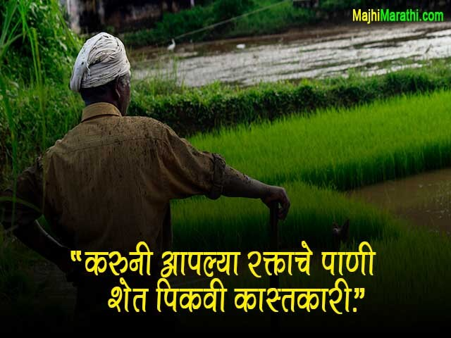
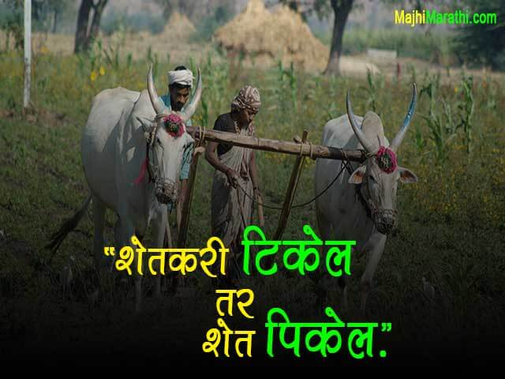
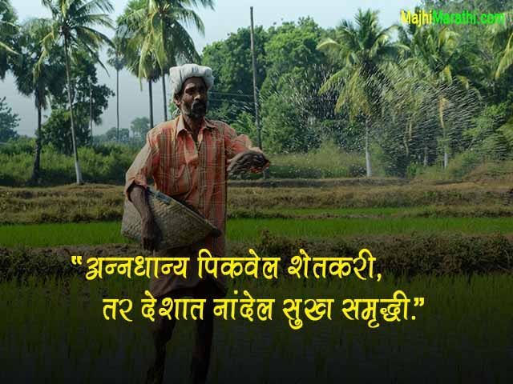

शेतकरी राजा
WELCOME TO FARMEASY!
"जगाला आता समजेल की पैसा कितीही असला तरी खायला अन्नधान्य लागतं, तोच शेतकरी आता घरी निवांत झोपतोय आणि बाकीच्या लोकांची सध्या झोपच उडालीय."
"साधी राहणी मजबूत बांधा तोच आहे शेतकरी राजा."
ABOUT US
नमस्कार मराठी रसिकांनो, सर्वात अगोदर तुमचे FarmEasy ह्या मराठी
लोकप्रिय वेबसाईट वर स्वागत आहे. ही वेबसाइट सुरू करण्याचा एकाच
उद्देश आहे. तो म्हणजे इंटरनेट वर मराठी भाषेत जास्तीत जास्त
प्रमाणात माहिती उपलब्ध करणे. कारण, इंटरनेट वर मराठी भाषेतून खूप
कमी प्रमाणात माहिती उपलब्ध आहे.त्यामुळे आम्ही ही मराठमोळी वेबसाईट
सुरू केली आहे.
तसेच इंटरनेट वर मराठी भाषेचे प्रमाण अधिक
वाढावे. ह्यासाठी हा एक छोटासा प्रयत्न आहे. ज्यात तुमचे सहकार्य
अत्यंत गरजेचे आहे.

"शेतीच्या श्रमाच्या पायांवर आपल्याला गर्व,पृथ्वीला देणारा जीवन, पूर्ण आपल्याच्या अर्पणाचं तरंग."
"आपल्या शेतकरींसाठी आभार मनावतो, जय जवान, जय किसान! शेतीच्या कामाने आपल्या जीवनाची शक्ति देतात, शेतकरी आपल्यासाठी महत्त्वाचे आहे. आपल्या शेतकरी मित्रांना समर्थन देण्याचा आपला कर्तव्य आहे, त्यांना समृद्धि आणि सुखद जीवन देता येईल. शेतकरी सोडल्यास आपल्या तोफे, उद्योग आणि आहाराची दिवा समाप्त होईल. शेतकरी असल्याची शानदार गोष्ट!"


जय जवान, जय किसान
"करुनी आपल्या रक्ताचे पाणी शेत पिकवी कास्तकारी."
"शेतकरी टिकेल तर शेत पिकेल."
"अन्नधान्य पिकवेल शेतकरी, तर देशात नांदेल सुख समृद्धी."
